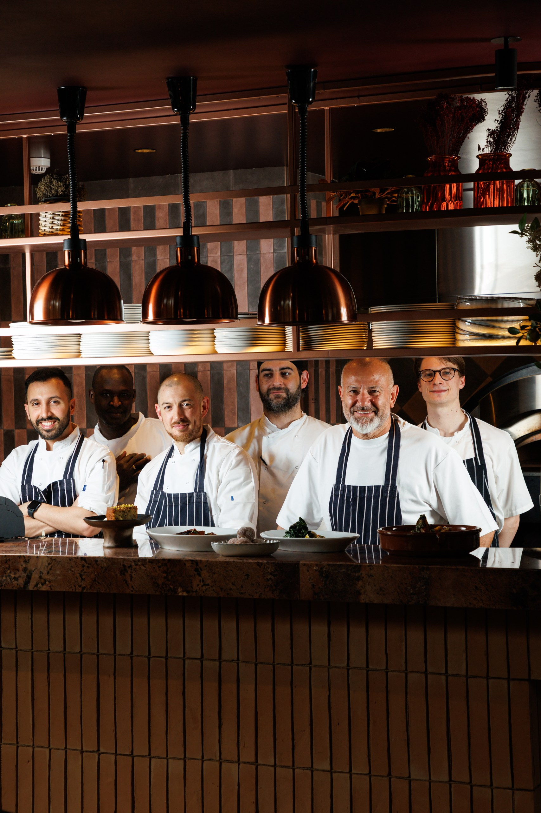
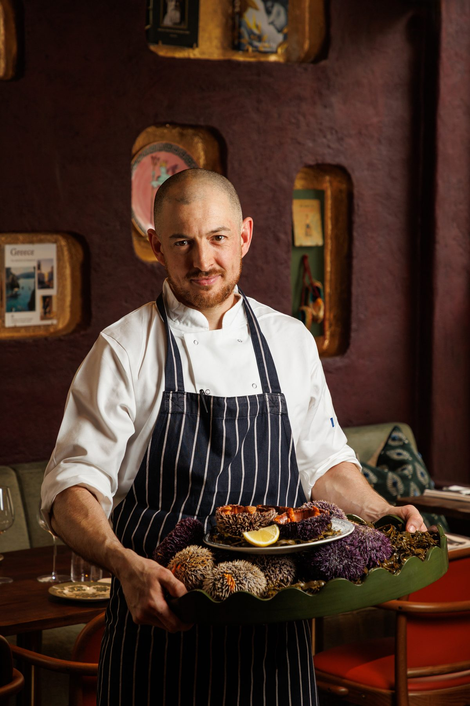
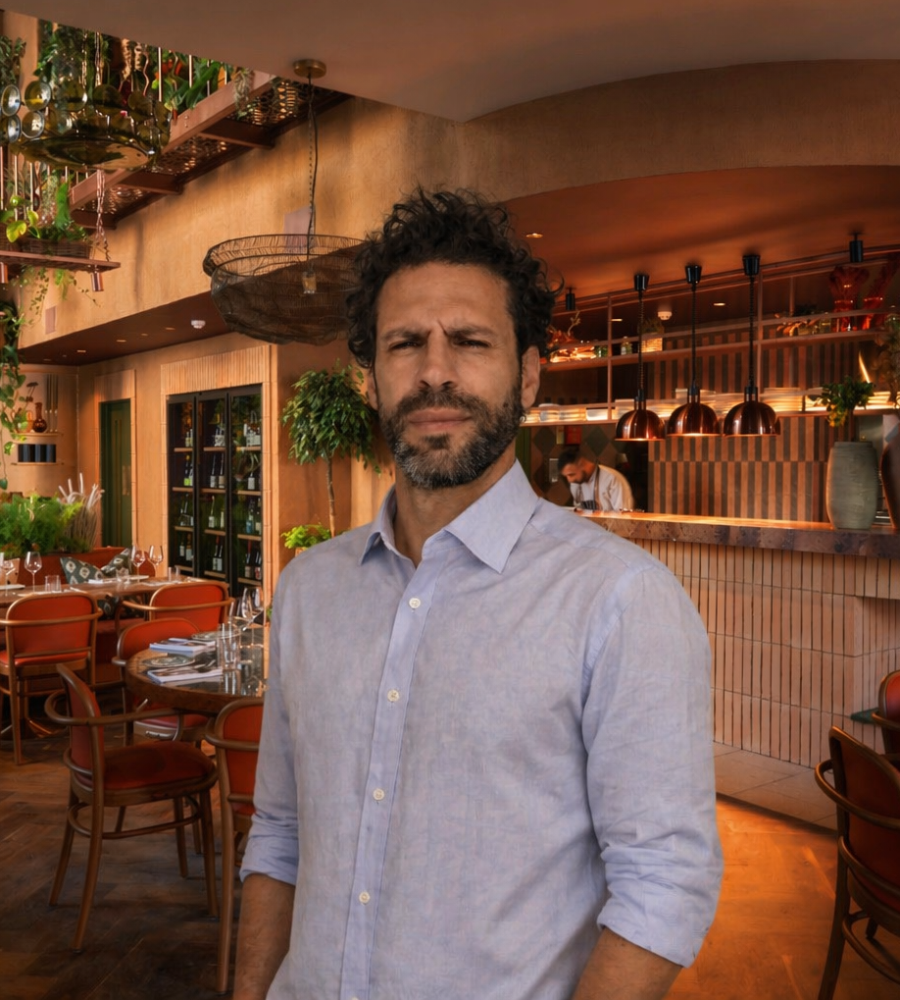

Glen Ballis
Executive Chef
Glen leads the kitchen at Clio. His approach is shaped by decades of Mediterranean cooking — a deep respect for produce, a preference for live-fire techniques, and an instinct for when to leave a dish alone.

Produce-led Mediterranean cooking, brought to life by a team that knows its craft.
In Greek mythology, Clio is the muse who preserves — the one who keeps the record of what's worth remembering.
It felt like the right name for a restaurant built around the things we want to keep cooking: grilled fish, a proper Greek salad, the kind of slow-roasted meats that draw people back. A menu rooted in Greek tradition, reaching into the wider Mediterranean, grounded in the best produce we can find.

Clio's kitchen is defined by a confident approach to simplicity. Every dish is built around one or two ingredients at their best — a whole fish from the grill, vegetables dressed with oil and lemon, meats slow-cooked until they fall apart.
There's no show, no unnecessary technique. Just cooking that trusts its ingredients — which means the sourcing has to be right. Fish from day boats. Lamb from Cornish farms. Olive oil from producers we know by name.
It's the kind of food that rewards repeated visits: familiar enough to order without thinking, interesting enough to keep discovering.
Executive Chef
Glen leads the kitchen at Clio. His approach is shaped by decades of Mediterranean cooking — a deep respect for produce, a preference for live-fire techniques, and an instinct for when to leave a dish alone.

Head Chef
Louis brings the precision of his years at Locanda Locatelli and Pied à Terre to Clio's daily service. Working closely with Glen, he's responsible for the consistency and quality that defines the room — dish after dish, night after night.

General Manager
Fabio oversees the dining room, bringing the warmth and attention of someone who's spent his career in restaurants that care — including Kensington Place and Hereford Road. He also curates the wine list, a thoughtful journey through Greek producers and the wider Mediterranean.
Our wine programme reflects the same care we bring to the food. An eclectic, carefully curated list that reaches across Greece, the Mediterranean and beyond — built to reward both dedicated oenophiles and guests who simply want a good bottle with dinner.
If you're unsure, ask. We genuinely like helping you find the right thing.
View the wine list →